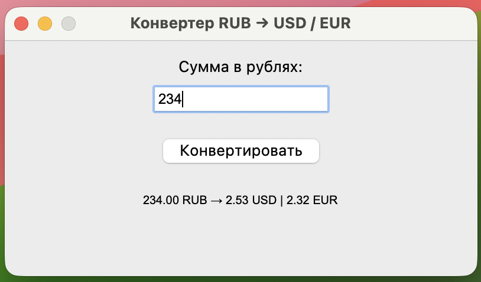

🐣 День 3: Pygame
Работа с текстовыми файлами в Python
Python предоставляет встроенные инструменты для чтения файлов через функцию open(). Для безопасной работы используется контекстный менеджер with, который автоматически закрывает файл после выхода из блока, даже при ошибках.
Базовый синтаксис
Параметры open():
"r"— чтение. Файл должен существовать."w"— запись. Создаёт файл или полностью очищает существующий."a"— добавление. Запись в конец без удаления данных.encoding="utf-8"— корректная работа с кириллицей и спецсимволами.
Методы чтения: примеры использования
1. f.read() — читает всё содержимое
Результат: Одна строка со всем текстом, включая \n. Подходит для файлов до 10–20 МБ.
2. f.readline() — читает одну строку
Результат: Возвращает строку с символом \n на конце. Используется редко, обычно в связке с циклом while для чтения построчно без загрузки всего файла.
3. f.readlines() — возвращает список строк
Результат: Список вида ["строка1\n", "строка2\n", ...]. Удобно для сортировки, фильтрации или доступа к конкретной строке по номеру. Загружает весь файл в память.
4. for line in f: — итерация (рекомендуемый способ)
Результат: Чтение по одной строке без создания списка. Экономит память, работает с файлами любого размера. Стандартный паттерн для обработки логов и данных.
Обработка строк
Методы чтения сохраняют символы переноса \n. Для очистки используйте:
Полезные методы: .strip() (очистка), .split() (разбиение на слова), .startswith() (проверка префикса).
Когда какой метод использовать?
- Маленький файл, весь текст сразу →
f.read() - Нужен доступ к строкам по индексу →
f.readlines() - Любой файл, особенно большой →
for line in f:(рекомендуется)
Практические задания
📜 Задание: Анализ лог-файла (поиск ошибок)
Цель
Написать программу, которая эффективно читает большой текстовый файл с логами, построчно ищет строки, содержащие подстроку "ERROR", и выводит их общее количество.
Файл для тестирования: готовый лог-файл app.log можно скачать в блоке «Дополнительные материалы» внизу страницы.
Требования к программе
- Не загружать весь файл в оперативную память (файл может весить несколько ГБ).
- Использовать построчное чтение:
for line in file:. - Имя файла должно запрашиваться через
input() - Подсчитать строки, в которых встречается
"ERROR". - Вывести результат в формате:
Найдено ошибок: N.
💡 Подсказки (если застрял)
- Программа запускается без
MemoryErrorдаже с файлом >100 МБ - Корректно обрабатывает существующие и несуществующие пути к файлу
- Выводит точное количество строк с
"ERROR" - Использует
with open()для автоматического закрытия файла
🛡️ Задание: Индексатор «Антиплагиат» (Базовый уровень)
Цель
Написать программу, которая принимает два текстовых файла, сравнивает их содержимое и вычисляет процент совпадения уникальных слов.
Тестовые файлы: source.txt и check.txt доступны для скачивания в блоке «Дополнительные материалы» внизу страницы.
Требования к программе
- Спроси у пользователя имена двух файлов через
input(). - Считай текст из обоих файлов (укажи
encoding="utf-8"). - Приведи текст к нижнему регистру (чтобы «Привет» и «привет» считались одним словом).
- Убери знаки препинания (точки, запятые и т.д.), заменив их на пробелы.
- Преобразуй текст в
set(множество уникальных слов). - Найди общие слова и посчитай процент совпадения.
💡 Подсказки (если застрял)
- Программа запускается, запрашивает имена файлов и выводит результат
- Регистр букв не влияет на результат (А = а)
- Знаки препинания удаляются, слова считаются корректно
- Используются множества (
set) и оператор& - Результат округлен до 1 знака после запятой
🔊 Задание 3
Цель
Далее идут взаимосвязанные шаги, выполнив которые вы собирете простое приложение с GUI
🪙 Шаг 1: Создаём пустое окно
Цель
Запустить библиотеку, создать главное окно и заставить его «слушать» действия пользователя.
Инструкция
Создай файл converter.py. Вставь код и запусти (F5 или python converter.py):
Что добавилось и зачем
- import tkinter as tk — подключаем инструменты для окон.
as tk— сокращение, чтобы не писать длинное название каждый раз. - window = tk.Tk() — создаём главное окно. Имя
windowмы придумали сами. Всё остальное будем «вставлять» внутрь него. - .title() и .geometry() — задаём название и размер окна (300×150 пикселей).
- window.mainloop() — сердце приложения. Запускает бесконечный цикл, который ждёт кликов и печатания. Без него окно появится на долю секунды и исчезнет.
- Появилось окно 300×150 с заголовком «Конвертер км → мили»
- Окно не закрывается само, его можно двигать и сворачивать
📝 Шаг 2: Добавляем текстовую подсказку
Цель
Положить внутрь окна надпись, которая подскажет пользователю, что вводить.
Инструкция
Добавь 🟢 зелёные строки после настройки окна, но до window.mainloop():
Что добавилось и зачем
- tk.Label(window, text=...) — создаёт «стикер» с текстом. Первый параметр
windowговорит: «положи этот стикер внутрь нашего окна». - label_hint.pack() — команда
pack()означает «упакуй сверху вниз». Tkinter автоматически кладёт надпись в начало окна. Мы сохраняем её в переменную, чтобы позже менять текст.
- Вверху окна появилась надпись «Введите километры:»
- Окно стало чуть выше, чтобы вместить текст
⌨️ Шаг 3: Добавляем поле для ввода
Цель
Разместить поле ввода, куда пользователь сможет вводить числа.
Инструкция
Добавь 🟢 зелёные строки сразу после кода с label_hint:
Что добавилось и зачем
- tk.Entry(window) — создаёт интерактивное поле ввода. В него можно кликнуть и печатать.
- entry_km.pack() — снова «упаковываем». Tkinter кладёт поле под предыдущим элементом. Порядок вызовов
.pack()= порядок на экране.
- Под надписью появилось белое поле ввода
- В него можно кликнуть и печатать любые символы
🔘 Шаг 4: Добавляем кнопку
Цель
Добавить кнопку, по которой пользователь будет запускать расчёт. Пока она «пустая».
Инструкция
Добавь 🟢 зелёные строки после поля ввода:
Что добавилось и зачем
- tk.Button(window, text=...) — создаёт кликабельную кнопку.
- btn_convert.pack() — кладёт кнопку под поле ввода.
- Кнопка пока ничего не делает. Tkinter проверяет параметр
command. Если его нет, клик игнорируется. На следующем шаге мы это исправим.
- Кнопка появилась под полем ввода
- При клике ничего не происходит — это нормально, мы ещё не написали логику
📊 Шаг 5: Добавляем место для результата
Цель
Создать надпись, куда программа будет выводить посчитанные мили.
Инструкция
Добавь 🟢 зелёные строки после кнопки:
Что добавилось и зачем
- tk.Label(..., text="Результат: ---") — снова используем
Label, потому что результат мы только показываем, а не редактируем. - "---" — это «заглушка». Она резервирует место под будущую цифру, чтобы окно не дёргалось по высоте при обновлении.
- Сохраняем в
label_result, чтобы позже командой.config(text=...)заменить «---» на реальное число.
- Внизу появилась надпись «Результат: ---»
- Интерфейс готов: Подсказка → Поле → Кнопка → Место для ответа
🔘 Как заставить кнопку работать в Tkinter
В Tkinter кнопка (tk.Button) по умолчанию пуста. Чтобы она реагировала на нажатие, нужно привязать к ней функцию-обработчик через параметр command.
📝 Алгоритм подключения (3 шага)
- Создай функцию с логикой, которая должна выполниться при клике.
- Передай её имя в параметр
command=...при создании кнопки. - Не ставь скобки после имени функции (разбор ниже).
⚠️ Главное правило: БЕЗ скобок
| Код | Что произойдёт | Вердикт |
|---|---|---|
command=convert | Функция вызовется только при клике | ✅ Правильно |
command=convert() | Функция вызовется сразу при запуске, а кнопка останется «пустой» | ❌ Ошибка новичка |
🔍 Почему так работает?
Параметр command ожидает ссылку на объект функции (callable), а не результат её выполнения. Когда вы пишете convert без скобок, Python передаёт саму функцию в Tkinter. А когда добавляете (), Python сразу её запускает и передаёт в command возвращаемое значение (обычно None), поэтому клик игнорируется.
💡 Как передать аргументы в функцию?
Если функция требует параметров, оберните вызов в lambda:
lambda создаёт лёгкую функцию-обёртку. Она не выполняется сразу, а хранит инструкцию «вызови show_message("Привет!") при клике».
⚙️ Шаг 6: Оживляем кнопку и пишем логику
Цель
Написать функцию расчёта, защитить программу от ошибок ввода и привязать всё к кнопке.
Инструкция
1 Измени строку кнопки, добавив 🟢 параметр
2 Вставь 🟢 блок функции перед window.mainloop()
Что добавилось и зачем
- command=convert — без скобок! Мы передаём Tkinter ссылку на функцию. Tkinter сам вызовет её при клике. Если написать
convert(), функция сработает сразу при запуске. - def convert(): — создаёт «сценарий», который выполнится только по клику.
- entry_km.get() — забирает текст из поля. Всегда возвращает строку! Даже если ввели
10. - float(...) — превращает строку в число. Если ввели
abc, Python бросит ошибку. - try / except ValueError — «подушка безопасности». Вместо вылета программы мы ловим ошибку и пишем в окно предупреждение.
- label_result.config(text=...) — меняет текст на «стикере» на лету. Не нужно удалять старый и создавать новый — просто обновляем свойство.
- Введи
10→ клик → «Результат: 6.21 миль» - Введи
abc→ клик → «Ошибка: введите число» - Программа не закрывается, консоль чистая
- Кнопка срабатывает только при клике, а не при запуске
Задание 4
Цель
Далее идет задание на выбор. Вы выполняете либо следующее, либо задание "Звуковая доска"
💱 Задание: Конвертер RUB → USD и EUR
Цель
Разработай оконное приложение на tkinter, которое принимает сумму в рублях и одновременно выводит её эквивалент в долларах (USD) и евро (EUR) по фиксированным курсам.
Условия и курсы
- Одно поле ввода для суммы в рублях.
- Фиксированные курсы:
1 USD = 92.50 RUB,1 EUR = 101.00 RUB. - При нажатии кнопки программа вычисляет оба значения и обновляет метку результата.
- Формат вывода:
Сумма RUB → X.XX USD | Y.YY EUR

💡 Подсказка: Как сформировать строку результата
:.2f внутри f-строки автоматически округляет число до двух знаков после запятой. Это стандартный способ форматирования валют в Python.
- Окно открывается, поле ввода и кнопка работают без ошибок
- При вводе числа выводятся оба конвертированных значения с точностью до 2 знаков
- При вводе букв или пустого поля появляется сообщение об ошибке, программа не закрывается
- В коде используется деление:
usd = rub / 92.50иeur = rub / 101.00
🎛️ Задание: Звуковая доска + новый способ расстановки кнопок (grid)
Цель
В этом задании мы познакомимся с новым способом расстановки элементов — сеткой (grid), и создадим приложение «Звуковая доска».
📐 Как работает сетка (grid)
До этого мы использовали .pack(), который просто складывал кнопки друг под другом. Но что, если нам нужно сделать ровную таблицу? Для этого есть .grid().
Представь окно как тетрадный лист в клетку. Чтобы поставить кнопку, нужно указать её номер строки и номер столбца (счёт начинается с 0):
| 🎉 row=0, column=0 | 🤦 row=0, column=1 |
| 🦗 row=1, column=0 | 🎺 row=1, column=1 |
row=— номер строки (сверху вниз).column=— номер столбца (слева направо).columnspan=2— если виджет должен занять 2 клетки в ширину (как ползунок внизу).
Твоё задание
В коде ниже уже настроено окно, инициализирован звук и добавлена одна кнопка (🎉). Тебе нужно:
- Добавить функции для воспроизведения оставшихся звуков (по аналогии с
play_cheer). - Добавить кнопки с правильными эмодзи в нужные ячейки сетки.
Таблица соответствия (что куда ставить):
| Эмодзи | Звук | Координаты (row, col) | Где писать? |
|---|---|---|---|
| 🎉 | cheer.wav | 0, 0 | ✅ Уже есть в коде |
| 🤦 | fail.wav | 0, 1 | ❌ Нужно добавить |
| 🦗 | crickets.wav | 1, 0 | ❌ Нужно добавить |
| 🎺 | fanfare.wav | 1, 1 | ❌ Нужно добавить |
Заготовка (скопируй и дополни)
💡 Подсказки (если застрял)
- Все 4 кнопки стоят ровно в 2 столбца, не наезжают друг на друга
- Каждый смайлик играет свой звук (🤦 — ошибка, 🦗 — сверчки, 🎺 — фанфары)
- Ползунок громкости расположен внизу и растянут на всю ширину окна
- Перетаскивание ползунка меняет громкость для всех кнопок
📦 Задание: Превращаем скрипт в готовую программу для Linux
Цель
Научиться упаковывать Python-скрипт в один самостоятельный исполняемый файл, который можно запустить на любом Ubuntu-компьютере, даже если там не установлен Python.
Зачем упаковывать, если Python уже работает?
Библиотека PyInstaller берёт твой код, добавляет внутрь «мини-кухню» (интерпретатор Python и все зависимости) и собирает всё в один самостоятельный файл. На Linux у него не будет расширения .exe, но он запустится двойным кликом или через терминал!
📦 Разбираем команды упаковщика
| Флаг в команде | Что делает простыми словами | Почему важно |
|---|---|---|
--onefile | Собирает всё в один файл | Без него появится папка с десятками библиотек, в которых легко запутаться |
--noconsole | Скрывает окно терминала при запуске | Для GUI-приложений (Tkinter/Pygame) оно не нужно и только мешает |
--name "Имя" | Даёт файлу понятное название | Вместо script получится КонвертерВалют |
💡 Важно для Linux: PyInstaller создаст файл без расширения. Чтобы запустить его из файлового менеджера, может потребоваться отметить галочку «Разрешить исполнение» в свойствах файла.
🛠️ Пошаговая инструкция (делай по порядку)
- Установи упаковщик. Открой терминал (
Ctrl+Alt+T) и напиши:pip install pyinstaller. Это нужно сделать только один раз. - Перейди в папку со скриптом. В терминале используй команду
cd. Например:cd ~/Документы/МойПроект. Проверь файлы командойls. - Запусти сборку. Скопируй команду ниже, замени
имя_скрипта.pyна название твоего файла и нажмиEnter. - Дождись окончания. Терминал выведет много строк. Когда появится
completed successfully— сборка готова. - Найди и проверь. Готовый файл появится в папке
dist/. Запусти его через терминал:./dist/ИмяФайлаили двойным кликом.
Команда для терминала
💡 Подсказки (если что-то пошло не так)
Пример для файла soundboard.py. Повтори те же шаги для своего скрипта.
- Команда
pyinstallerзавершилась сообщениемcompleted successfully - В папке
dist/
📝 Проверка знаний
📦 Дополнительные материалы
⬇ Скачать архив с заготовками (ZIP)